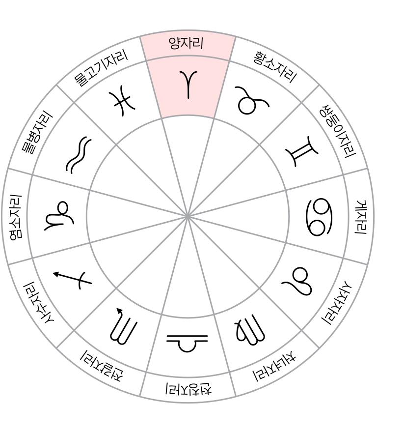

2025년 6월 4일 진행된 상담 내용을 바탕으로 직업 방향·거주·연애·인간관계·타이밍을 주제별로 정리한 리포트입니다.
목차
장인희 · 1998. 01. 03 20:27 · 청주

1. 차트 한 줄 요약
사자 상승 · 염소 태양 · 물고기 달이 기본 골격이고, 진짜 무게는 7하우스 물병에 모인 금성·화성·목성에 실립니다. 즉, 사람·관계가 인생의 큰 사건을 자주 만들어내는 차트입니다.
2. 핵심 행성 배치
- 상승 사자 / 태양 염소 — 겉은 활달, 안쪽은 책임·장기 안정 지향. 일과 평판이 자기 정체성의 큰 축.
- 달 물고기 — 감정이 빠르게 스며드는 타입. 자기 보호용 거리감이 필요.
- 물병 7하우스 스텔리움 (금성·화성·목성) — 연애·결혼·동료·경쟁 관계가 인생 사건을 자주 일으킴.
- 토성 양 9하우스 — 자격·공부·장기 계획에서 늦게 단단해지는 구조. 일찍 결과를 기대하지 말 것.
이번 상담의 중심은 "어디에 머물고, 어디로 나아갈 것인가"였습니다.
직업, 거주, 연애, 인간관계 네 가지 질문이 있었지만, 실제로는 하나로 이어집니다. 지금 자리를 유지할지, 환경을 바꿀지, 그리고 관계 스트레스에서 언제 숨통이 트일지가 핵심이었습니다.
첫 번째 질문은 7월 말 계약 종료를 앞두고 재계약이 맞는지, 이직·창업을 준비해야 하는지였습니다. 두 번째는 8월 이사 시 본가 복귀 vs 독립 유지 문제였고, 세 번째는 연애·결혼 흐름, 네 번째는 직장동료·가족 인간관계 스트레스에서 언제 벗어날 수 있는지였습니다.
1. 핵심 질문 목록
- 현재 직업을 계속 가져가도 괜찮을까, 아니면 이직이나 창업이 더 맞을까.
- 이사 시점에 본가로 들어가는 것이 나을까, 따로 거주지를 구하는 것이 나을까.
- 연애는 언제 가능하고, 결혼은 하게 되는지, 어떤 관계가 맞을까.
- 인간관계 스트레스에서 언제 벗어나고, 어떤 사람들이 도움이 될까.
2. 이번 상담의 큰 그림
네 가지 질문이 결국 하나의 축으로 모입니다. 자리를 지킬 것인가 옮길 것인가, 그리고 누구와 어떤 거리에서 살 것인가. 직업·거주는 외부 환경 조정이고, 연애·인간관계는 내부 거리감 조정입니다. 둘은 분리된 문제가 아니라 같은 시기에 함께 정렬되는 흐름입니다.
차트가 7하우스 중심이라 "사람 문제가 자주 생긴다"는 부분과 "관계를 다루는 능력으로 풀어내야 한다"는 부분이 동시에 나옵니다. 회피보다 명확한 기준 세우기가 이번 흐름의 핵심 전략입니다.
3. 리포트 읽는 법
- 실제 상담은 대화체로 진행됐지만, 같은 주제끼리 묶어 정리했습니다. 대화 순서와 리포트 순서는 일치하지 않습니다.
- 각 챕터 첫머리의 굵은 한 문장 + 부연이 그 챕터의 핵심 결론입니다. 시간이 없으면 그 부분만 읽어도 됩니다.
- 같은 이야기가 두세 챕터에 걸쳐 짧게 반복될 수 있는데, 의도된 연결입니다.
지금 하고 있는 산업안전보건·보건관리 계열은 생각보다 잘 맞는 직업입니다.
완전히 다른 길을 찾기보다, 이 분야 안에서 포지션과 조건이 더 나은 곳으로 이동하는 쪽이 현실적입니다.
1. 왜 잘 맞는 일인가
- 현재 직업은 "안 맞아서 힘든 일"이 아니라 "자리가 덜 잡혀서 힘든 일"에 가깝습니다.
- 건설현장 보건관리는 현장성과 관리성이 함께 있는 일 — 교육·안내·규칙 전달·사람 관리에 강한 이 차트에 잘 맞습니다.
- 아동 돌봄보다 성인 교육·관리 쪽이 더 편한 구조입니다.
- 캐드·도면 등 기술 방향은 화성을 많이 쓰는 길이라 장기적으로 스트레스가 커질 수 있습니다.
2. 같은 분야 안에서 옮길 때 보는 기준
- 현장성 비중이 너무 큰 자리는 화성을 과하게 쓰게 됩니다. 관리·교육 비중이 더 큰 포지션이 길게 잘 맞아요.
- 독립 결정권이 어느 정도 있는 자리가 좋습니다. 모든 판단을 위에서 받아오는 구조는 답답함이 누적됩니다.
- 경력으로 쌓이는 자격·경험인지 — 토성 9하우스 영향으로 자격·전문성이 늦게 빛나는 차트라 장기 누적이 중요합니다.
3. 창업에 대하여
창업이 금지되는 차트는 아닙니다. 다만 지금 당장 독립 창업보다, 안정적인 직업을 먼저 잡고 금성 분야(즐거움·서비스·취미)를 부업이나 작은 형태로 시작하는 쪽이 더 좋습니다. 제과제빵은 지금은 취미로 두고, 생활 기반이 안정된 뒤에 다시 생각해도 늦지 않습니다.
창업을 본격적으로 검토할 시점은 2027~2028년 직업 환경 변화 흐름 즈음. 그때까지는 본업 안에서 포지션·경험을 정리하는 시간으로 쓰면 충분합니다.
본가 복귀보다는 독립을 유지하는 편이 좋습니다.
가족 거리감이 이미 스트레스라면, 잠시 편하자고 들어갔다가 심리적 부담이 더 커질 수 있습니다. 이번 흐름은 원거리 이동보다 근거리 이사에 가깝습니다.
1. 직장과 거주의 우선순위
- 재계약이 가능하면 현재 회사에 남아 생활 기반을 흔들지 않는 편이 좋습니다.
- 재계약이 안 되더라도 재취업이 오래 막히는 흐름은 아니므로 본가로 들어가야만 하는 상황은 아닙니다.
- 독립 공간을 유지하는 것이 관계 스트레스를 줄이는 데 도움이 됩니다.
2. 거주 선택 기준
일자리 접근성과 독립성을 동시에 확보할 수 있는 곳이 좋습니다. 본가와 너무 가까워 가족이 거리를 좁히기 쉬운 곳은 피하고, 출퇴근이 감당 가능한 선에서 심리적 경계가 생기는 지역이 더 낫습니다.
이번 이사는 단순히 방을 옮기는 문제가 아니라 가족과의 거리 조절을 다시 세팅하는 문제입니다. 비용만 보고 결정하기보다 "내가 여기서 숨을 쉴 수 있는가"를 함께 보셔야 합니다.
3. 본가 거리 이슈 관리법
- 방문·통화 빈도를 미리 정해두기 — 즉흥적 요청에 끌려가지 않도록 주 1회·격주 등 주기 설정.
- 도움 요청과 간섭의 경계 분명히 하기 — 부탁받았을 때 "한 번만"인지 "정기적으로"인지 확인.
- 본가 방문 후 회복 시간 확보 — 길게 머물수록 정리에 더 오래 걸리는 타입이라 다음 일정을 비워두는 게 안전.
연애 시작은 늦은 편이지만, 결혼운 자체가 나쁜 차트는 아닙니다.
가볍게 스치는 썸을 연애로 인정하는 타입이 아닙니다. 신뢰가 생기기까지 시간이 필요하고, 그 기준을 통과해야 비로소 관계가 시작됩니다.
1. 시기 흐름
연애는 2025~2026년에는 체감하기 어렵고, 빠르면 2027년 초, 늦어도 2028년 초부터 실제로 움직일 시기가 들어옵니다. 소개팅이나 검증된 경로가 더 잘 맞는 차트입니다.
2. 관계의 성격
조건을 꼼꼼히 볼 가능성이 있고, 상대도 직업·생활 기반이 괜찮은 사람일 수 있습니다. 결혼 후 배우자에게 집중하는 편이며, 친구처럼 지내는 관계 그림도 있습니다. 육아는 역할 분담이 중요합니다.
결혼을 서두를 필요는 없습니다. 직업을 안정시키고 자기 생활을 갖춘 뒤 결혼해도 충분합니다. 본인 기준이 명확해야 좋은 관계가 자리 잡는 차트입니다.
3. 잘 맞는 경로 / 피해야 할 패턴
- 잘 맞는 경로 — 소개팅, 직장·취미 모임을 통한 검증된 인연, 시간을 두고 신뢰가 쌓이는 만남.
- 피해야 할 패턴 — 즉흥적 만남, 정리되지 않은 사람과의 관계, 감정에 먼저 휩쓸리는 시작.
- 관계 점검 신호 — 만난 뒤 더 지치는지 충전되는지. 차트상 잘 맞는 사람은 같이 있을 때 자기 생활이 무너지지 않는 사람입니다.
장인희 님은 사람 때문에 힘들지만, 사람을 다루는 능력도 강한 차트입니다.
7하우스가 강하다는 것은 타인 문제가 자주 생긴다는 뜻이기도 하지만, 타인을 읽고 다루는 능력이 인생의 중요한 무기가 된다는 뜻이기도 합니다.
직장동료나 가족처럼 완전히 끊기 어려운 관계에서 피로가 누적되기 쉽습니다. "좋은 사람을 많이 만나는 것"보다 "나를 갉아먹는 사람과 경계를 세우는 것"이 더 중요합니다.
1. 도움이 되는 사람들
- 귀인은 장인희 님의 기준과 거리감을 존중해 주는 사람입니다.
- 감정적으로 휘말리게 하거나 의존하게 만드는 사람은 피로를 키웁니다.
- 책임감 있고 말이 통하며 각자의 경계를 지켜주는 사람이 도움이 됩니다.
- 일·역할 기반의 만남에서 좋은 인연이 나오기 쉬운 차트 — 의외성보다 검증된 신뢰가 잘 맞아요.
2. 본인이 주의할 점
누군가의 귀인이 되려는 성향도 강합니다. 힘든 사람을 보면 돕고 싶어지지만, 모든 사람을 책임지려 하면 금방 지칩니다. 내 생활이 무너지지 않는 선을 미리 정해두는 것이 필요합니다.
3. 가족 스트레스 관리법
- 거리 두기 = 단절이 아님 — 정기적 안부와 거리감 유지를 같이 가져갈 수 있어요.
- 의사소통 채널 정하기 — 즉흥 통화보다 정해진 시간·요일 만남이 부담을 줄여줍니다.
- 자기만의 시간·공간 확보 — 가족 일정 사이에 회복 시간을 확보하지 않으면 누적 피로가 빠르게 옵니다.
2027~2029년은 직업·관계·건강이 함께 움직일 수 있는 중요한 구간입니다.
삶의 구조가 한 번 크게 조정되는 구간입니다. 미리 알고 정리해두면 방향 전환의 계기로 쓸 수 있습니다. 건강 관리가 특히 중요합니다. 내 몸의 이상 신호를 넘기지 말고, 검진과 회복 루틴을 미리 잡아두는 편이 좋습니다.
1. 연도별 흐름
2. 우선순위 액션 가이드
- 단기 (~2026) — 직업 기반 안정 + 자격·경력 누적. 본가 거리 세팅 마무리. 큰 결정은 가급적 보류.
- 중기 (2027 ~ 2028) — 연애·이직 흐름이 함께 들어오는 시기. 한 번에 다 결정하려 하지 말고 우선순위를 정해서 들어가기.
- 장기 (2029 ~) — 결혼·환경 전환의 큰 분기점. 그때 후회 없으려면 그 직전 1년 동안 자기 기준을 정리해두는 게 핵심.
3. 건강·생활 관리 포인트
2027~2029년 구간에서 건강이 함께 움직일 수 있어, 그 전부터 검진·회복 루틴을 미리 잡아두는 것이 가장 큰 보험입니다. 무리해서 한 번에 다 바꾸려 하면 몸이 먼저 신호를 보낼 수 있어요. 작게라도 꾸준한 운동·수면 패턴이 이 차트에는 가장 효과적입니다.